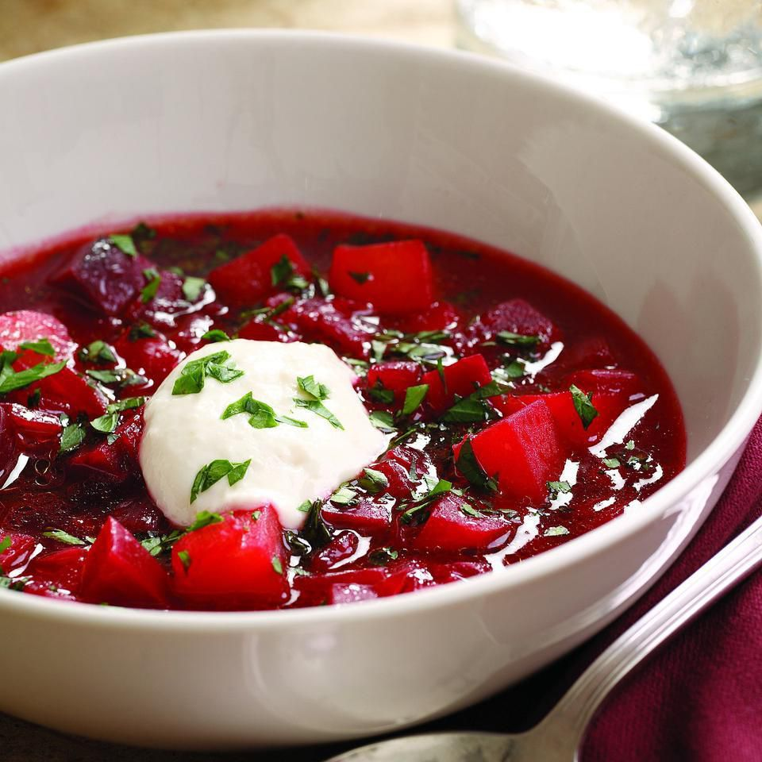

Home

Borscht
Ingredients
- Fresh Beets
- Broth (beef, chicken, or vegetable)
- Onions
- Carrots
- Cabbage
- Potatoes
- Tomatoes
- Garlic
- Bay Leaves
- Herbs and spices (dill, parsley, paprika)
- Vinegar or lemon juice
- Salt and pepper
-
Prepare the Ingredients:
- Peel and grate the beets. You can wear gloves to prevent staining your hands.
- Chop the onions and garlic.
- Peel and grate the carrots.
- Slice or shred the cabbage.
- Dice the potatoes
-
Sauté the Aromatics:
- In a large soup pot, heat some oil over medium heat.
- Add the chopped onions and garlic. Sauté until they become translucent.
-
Add the Beets:
- Add the grated beets to the pot. Sauté them with the onions and garlic for a few minutes. This helps develop their flavor.
-
Add the Broth:
- Pour in the broth of your choice (beef, chicken, or vegetable). Use enough to cover the ingredients. Usually, about 6-8 cups of broth are needed for a large pot of borscht.
-
Add the Vegetables:
- Add the grated carrots, diced potatoes, sliced/shredded cabbage, and diced tomatoes (if using).
- Toss in a couple of bay leaves for added flavor.
-
Season:
- Season with salt and pepper to taste.
- Sprinkle in dill (either fresh or dried) to add a distinctive flavor.
-
Simmer:
- Bring the soup to a boil, then reduce the heat to a simmer.
- Cover the pot and let it simmer for about 30-40 minutes, or until the vegetables are tender.
-
Finish and Serve:
- Add a splash of vinegar or lemon juice to taste. This adds a touch of acidity to balance the flavors.
- Taste the borscht and adjust the seasoning if necessary.
- Remove the bay leaves.
- Serve hot, garnished with a dollop of sour cream and additional fresh dill if desired.
Borscht can be enjoyed immediately, but its flavors often improve if it's allowed to sit for a while and reheated before serving. It can also be served cold, and variations with hard-boiled eggs or meat are common, depending on regional preferences.